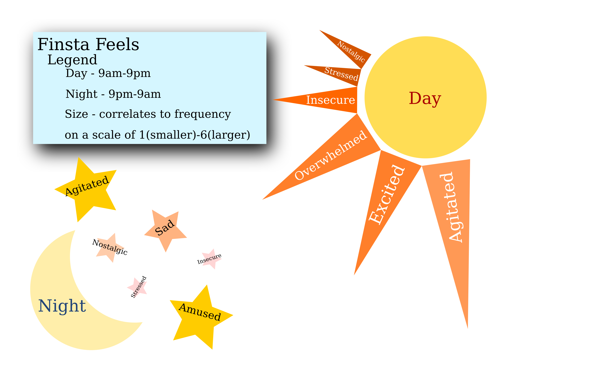

Here, you can see the data which was collected over a period of 7 days. The data includes a timestamp, the emotions that both preceeded and followed posting, and the nature of the image and caption that was posted.
Here, you can see the data which was collected over a period of 7 days. The data includes a timestamp, the emotions that both preceeded and followed posting, and the nature of the image and caption that was posted.
Using the data, a visualization was created in order to represent the information presented in an artistic way. The visualization utilizes the sun and its rays in order to represent the frequency of certain emotions that led to posting throughout the day. The moon and stars represent the same thing for the emotions of the posts that were shared at night.
This video provides some background information and reference about the new phenomenon of "Finstas." Essentially, these are just instagram accounts that are meant to be super private in order to let users express themselves however they like without the fear of having their dirty laundry made easily accessible to the public. This includes keeping it away from aquaintences and potential employers, while still allowing select friends to keep up with the intimate details of your life.